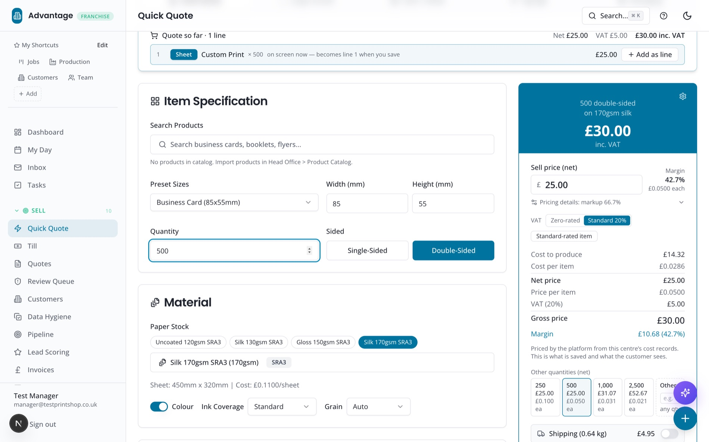
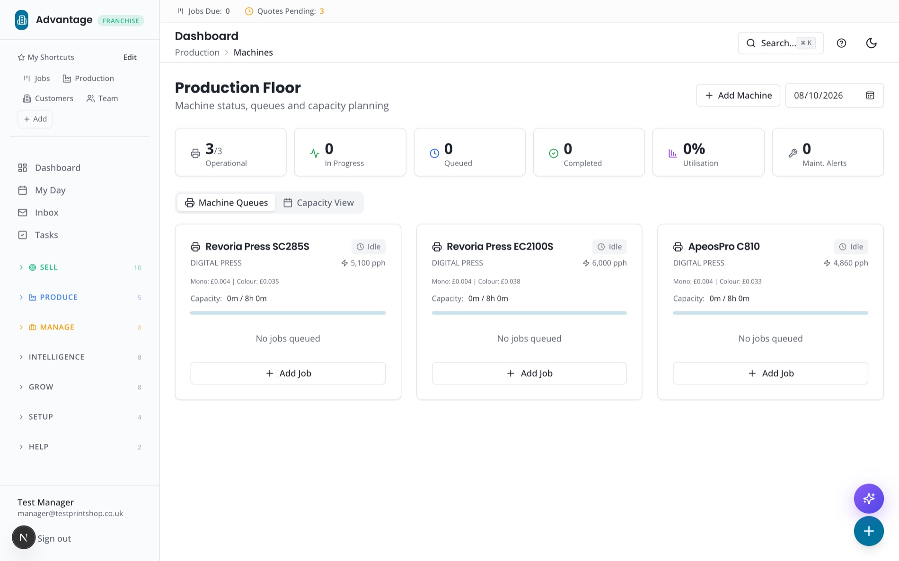
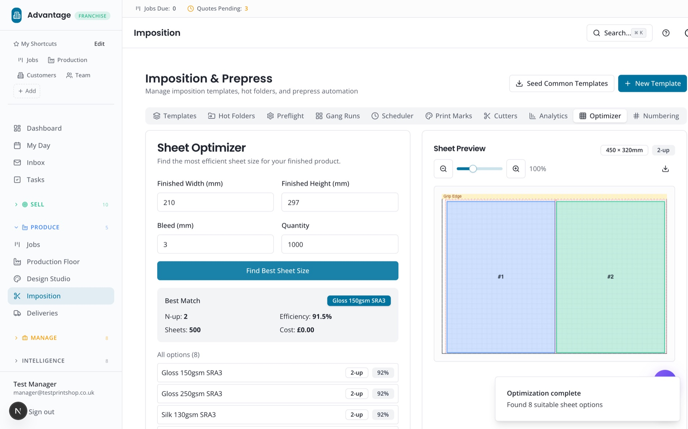
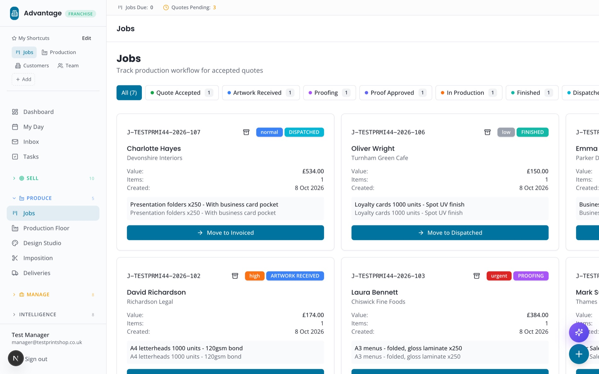
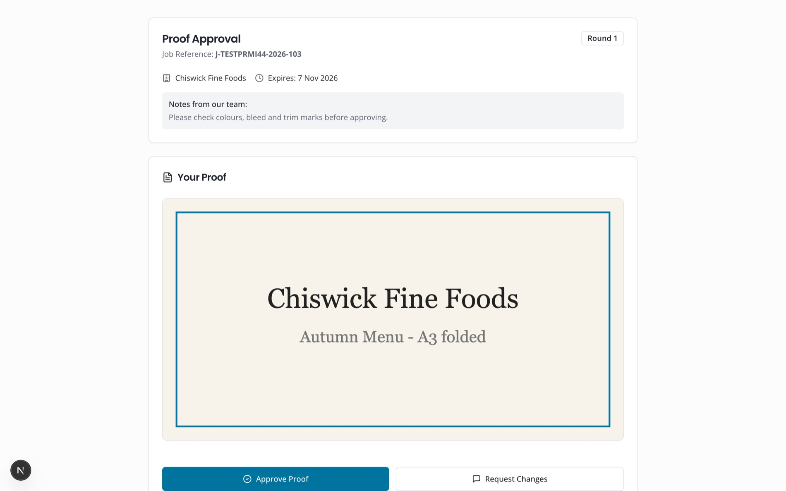
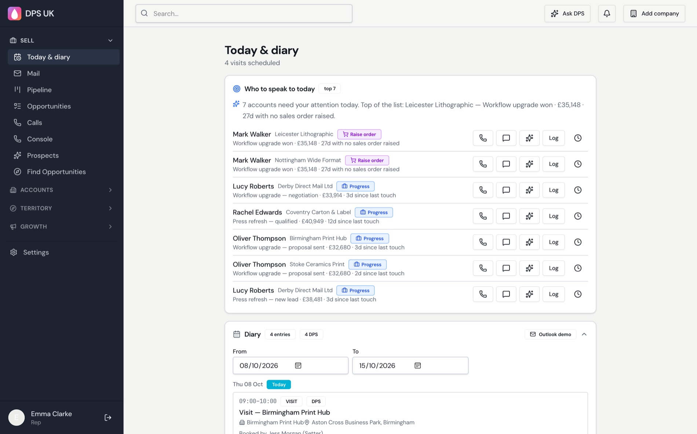
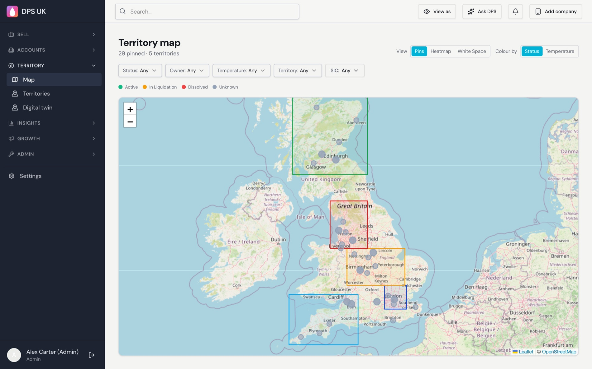
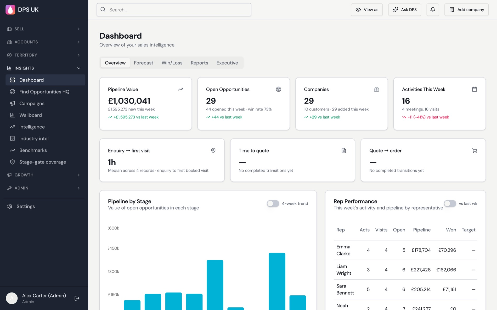
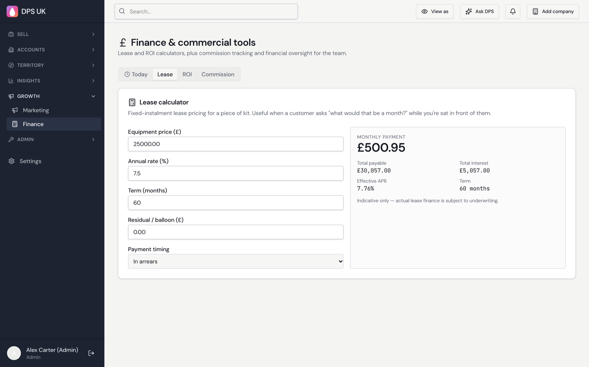

Computer Xplorers GroupInvestor briefing · 12 October 2026
Prepared for Fujifilm
The operating
system for the
print network.
Four AI-powered platforms, built in under seven months, that quote, produce, sell and market print — for franchise networks, independents and the vendors who equip them.
Advantage MISAdvantage AIRaring2go!DPS Sales Intelligence
Strictly private & confidential
Facts verified against source code
as at 8 October 2026
The opportunity
Every press is only as
productive as the software around it.
Print businesses run on quotes, artwork, imposition, scheduling, proofs and invoices, and most stitch that together by hand. We built the connected layer, and the AI on top of it, so every press sits inside a faster, more profitable business.
A
Advantage MIS In field pilot now Fujifilm Flow API · Jan 2027
Being piloted in the field today: the management platform for print centres and independent print shops: instant multi-mode quoting, 14-stage job control, prepress, web-to-print, EPOS, CRM and finance. Ships with a verified Fujifilm Revoria & ApeosPro press catalogue.
678 data models · 1,077 API endpoints · 344 screens
✦
Advantage AI & the Franchise Platform Built
A multi-tenant franchise operating system with a streaming AI assistant, franchise coach, lead scoring, workflow builder and metered AI billing. Proven pattern for running hundreds of locations from one brain.
754 data models · 3,690 routes · 1,135 templates · 93 scheduled automations
R
Raring2go! Business-in-a-Box In build · due Q2 2027
The franchise and publishing OS for a network of 80+ territories: one login per franchisee, one territory edition driving print-ready PDF and digital magazine, advertiser sales, native email, royalties and AI agents in one system. Foundations, edition pipeline, newsletters and job engine are already built.
Today: 140 tables · 19 packages · in internal UAT
D
DPS Sales Intelligence Cloud Built
An AI CRM and field-sales engine for print-technology suppliers: UK-wide prospecting, equipment-lifecycle “buy windows”, lease and ROI quoting, call recording and coaching, and a customer deal room.
162 tables · 609 API routes · 116 test files
5 days→15 min
In the field today: live in 39 centres across our platform versions since June 2026. Pilot centres cut enquiry-to-quote from a 5-day average to 15 minutes, and users rate Advantage 9 / 10.
Why it matters to Fujifilm — and to every press brand
One integration surface, many customers. Connect a Fujifilm device once to the platform and every centre on it — franchise or independent — can quote, schedule and sell against that device with real speeds, real click costs and real capacity.
The market
A very large industry,
getting leaner every year.
Print is shrinking in the number of firms, not in importance. Fewer, leaner businesses must quote faster and waste less. That is exactly where an AI-driven platform earns its place — and it works for any press, not only Fujifilm's.
UK printing industry
£13.75bn
annual turnover (2022), across about 7,200 companies and 98,000 employees
US commercial printing
$67bn
revenue across roughly 18,000 companies
Global commercial printing
~$510bn
mid-range 2025 estimate; published figures run from $320bn to $840bn by definition
Adjacent software market
$2.5–4.3bn
global print-management software, 2025 (estimates differ); print-estimating software adds a further $0.6–0.85bn
The pressure to modernise
−15% / −20%
fewer UK print companies and employees over five years (BPIF-based summary): the same output from leaner teams
What a small share means
| UK companies on the platform | Share of ~7,200 UK print companies | Annual subscription revenue at the £399-a-month guide price |
|---|
| 72 | 1% | £344,736 |
| 360 | 5% | £1,723,680 |
| 720 | 10% | £3,447,360 |
Advantage MIS guide price £399 a month (£4,788 a year), not fixed. Subscription only, UK only, using BPIF's company count; excludes payments, AI usage, the franchise platform and Raring2go!.
Fujifilm-first, not Fujifilm-only. Machine profiles are data, so any press brand can be added. Fujifilm gets first-class integration and the Flow API link in January 2027; every other centre on the platform still benefits from the quoting, job and AI engines.
Sources: BPIF “UK Printing Facts & Figures” (2023 edition, 2022 data); First Research US commercial printing profile; Grand View Research, Straits Research, Precedence Research, IBISWorld (global commercial printing, 2025); Fortune Business Insights, The Business Research Company (print management software, 2025); Wiseguy Reports, Market Research Intellect (print estimating software). Market-research figures vary by definition and are third-party estimates.
Scale & velocity
Four platforms.
Under seven months.
Counted directly from the four code repositories on 8 October 2026 — no estimates, no projections.
1.3M
lines of production & test code across four platforms
1,734
data models & tables powering quoting, jobs, CRM, finance, publishing and AI
5,000+
API endpoints and routes — every one with server-side authorisation rules
8,000+
automated tests written across the suite, plus CI guards that fail the build on unprotected routes
3,200+
commits since March 2026 — continuous, audited delivery
100+
automated background jobs & scheduled workflows: 93 scheduled tasks in the franchise platform and 16 cron jobs in Advantage
Where the code lives
Advantage MIS (print)538k lines
Franchise Platform & Advantage AI425k lines
DPS Sales Intelligence281k lines
Raring2go! Publishing OS64k lines
Method: line counts exclude dependencies; DPS figure may include generated API-client code. Test figure is the sum of test functions and recorded passing tests per repository (Advantage: 2,435 passing at the 6 Oct 2026 audit). Commit span 17 March – 8 October 2026.
Advantage × Fujifilm
Already speaking
your press language.
Advantage ships with a hand-verified machine catalogue transcribed from manufacturer specifications — and Fujifilm is the default manufacturer when a centre sets up its machine rates.
Seeded as network-default machine profiles
Revoria Press SC285SProduction press
Revoria Press EC2100SProduction press
Revoria Press SC180Production press
Revoria Press SC170Production press
ApeosPro C810Production printer
ApeosPro C750Production printer
ApeosPro C650Production printer
Plus finishing
Morgana SC7800 Pro-RS XLFinishing
Morgana AutoCut ProFinishing
Morgana AeroCut X / X ProFinishing
Rated engine speeds
3,900–6,000
pages per hour, per profile — drives live time-and-cost calculations
3-tier spec lookup
1 · Verified catalogue — 100% confidence
2 · Datasheet extraction — PDF or URL, per-field confidence
3 · AI recall — hard-capped at 60%
What happens when a Fujifilm press is on the network
Costed to the click
Each centre enters its own click rate, setup and speed. Quotes use real machine economics — never a guess, never a client-supplied cost.
Matched to the job
Press-compatibility and capacity logic checks stock, size and finishing against machine capability before a job is promised.
Imposed & optimised
A 1,000-line imposition engine, sheet optimiser, cut-and-stack and creep calculator keep waste down and sheets full.
Fujifilm, Revoria and ApeosPro are trademarks of their respective owners. Catalogue content is an independent transcription of published specifications; API access to Fujifilm's Flow software is due in January 2027, and that is when the live connection to the presses arrives — about three months from this briefing.
What Fujifilm gets
Every quote is a forecast of
clicks and consumables.
Advantage costs each job to the click on a named press. So before a job runs, the platform already knows the clicks, stock and finishing it will use. Aggregated and opt-in, that is a demand signal Fujifilm has never had at centre level.
1QuoteClicks, stock, size costed on the press profile
Built
2Job on pressStage, schedule and capacity
Built
3ConsumptionSheets, clicks, waste, rework
Built
4ReplenishInventory prediction and reorder
Built
5SignalOpt-in usage feed via Flow API
Jan 2027
A real usage signal
Utilisation by press model, job mix by stock and size, click volumes and rework rates — by centre, by region, by month. Today that picture comes from sell-in; this adds sell-through.
Consumables pull-through
The right consumables at the right time, with fewer stock-outs mid-job. Counters and usage can trigger reorder and service conversations automatically.
Smarter upgrades
Capacity data shows which centres are outgrowing a press. Paired with the DPS refresh-window engine, that becomes a timed, targeted upgrade conversation.
The demand signal, in one line
Installed presses×utilisation×clicks per hour=a live consumables forecast
Fujifilm supplies the installed base; the platform supplies utilisation and job mix from the centres on it.
What centres get in return
- Quotes costed on their own click rates
- No stock-outs halfway through a job
- Capacity and rework insight they can act on
Privacy by design
- Centre-owned data; the feed is opt-in
- Aggregated by default, never customer artwork or prices
- Consent history and audit already in the platform
Steps 1–4 are built today in Advantage MIS. The opt-in usage feed is proposed and depends on API access to Fujifilm's Flow software (due January 2027).
Advantage MIS · in action
Quote it. Cost it.
Put it on the press.

Quick Quote — priced and costed server-side, with margin, VAT and a live quantity ladder

Production floor — Revoria and ApeosPro presses with rated speeds

Sheet optimiser — best stock, n-up and efficiency
Costed to the clickServer-side pricing from the centre's own cost records.
Fujifilm-readyRevoria and ApeosPro profiles with rated speeds.
Waste downOptimised sheets and n-up for every quantity.
Screens captured from a local demo environment. All figures, customers and click costs shown are demonstration data, not customer data.
Advantage MIS · in action
From accepted quote
to approved proof.

Jobs board — every accepted quote moves through a validated stage engine

Customer proof approval — approve or request changes from a secure link
14 job stagesValidated transitions, role-gated overrides.
Online proofingCustomer approval moves the job on automatically.
One recordQuote, artwork, proof, job and invoice stay linked.
Demo environment; sample customers and job values.
Advantage MIS · efficiency
From enquiry to dispatched —
without re-keying a thing.
One connected record follows the job from the first email to the final invoice. Every hand-off that used to be a phone call, spreadsheet or sticky note is a rule in the system.
1EnquiryEmail, web-to-print or phone
2AI quoteParsed, priced, confidence-scored
3AcceptPublic link, Stripe checkout
4PreflightArtwork checks & auto-fix
5ProofCustomer approves online
6PressImposed, scheduled, produced
7Ship & billDispatch, invoice, Xero
QUOTE ACCEPTEDARTWORK RECEIVEDDESIGNER REVIEWPROOFINGPROOF APPROVEDIN PRODUCTIONREWORKON HOLDQUALITY CHECKFINISHEDDISPATCHEDINVOICEDPAIDCANCELLED
14-stage job state machine · transitions validated · overrides role-gated
A pricing engine print people trust
- Five production modes costed server-side: digital sheet, large format, litho, signage, packaging
- Paper & parent-sheet utilisation, spoilage, click cost, setup, finishing, labour, delivery, turnaround, target margin and VAT
- Litho plates, make-ready, ink and wash-up
- Quantity ladders from 50 to 10,000 re-imposed live beside the price
- Missing cost data flags the quote for review — it never silently prices at zero
- Every price is snapshotted and can be re-costed
The whole print business, one login
- Customer portal: orders, reorder, bulk order, approvals, invoices
- Per-centre web-to-print storefronts with custom domains
- EPOS till, inventory, suppliers, outsourcing marketplace
- Prepress: preflight, ICC, print marks, JDF/JMF and Enfocus Switch connectors
- Stripe Connect & Terminal; Xero, Sage and QuickBooks sync
- Shippo shipping, sustainability certificates, variable data
Jan 2027
Network integration: Fujifilm Flow API access. Advantage is in the field today as a live pilot. API access to Fujifilm's Flow software, due January 2027, connects job and workflow data end to end — with Fujifilm presses already first-class machine profiles.
The AI toolkit
AI in every workflow.
Not bolted on — built in.
Across the four platforms, AI prepares, predicts and drafts — so people spend their day deciding and selling instead of typing and chasing.
Advantage MIS · print operations
Run the shop floor faster
- Email-to-quote: reads an enquiry, builds the spec, prices it and scores its own confidence
- Copilot: intent engine, action executor, proactive nudges, anomaly detection, forecasting and metric explainer
- Artwork & image-quality checks and design critique
- Machine-spec lookup with confidence tiers
- Upsell suggestions inside the quote, natural-language search, voice job intent, quote learning
Advantage AI · franchise platform
Coach the whole network
- AdvantageAi assistant: streaming chat with memory, function calling and a notepad
- Franchise Coach and AI Intelligence Hub with lead scoring
- Workflow Builder: analyses data and proposes automations
- Curriculum assistant, reports assistant, AI email and content drafting, multilingual translation
- Metered AI: every call logged, costed, with budget caps per organisation, franchise and user
DPS Sales Intelligence · equipment sales
Sell more kit, smarter
- Lead & opportunity scoring, next-best-action engine and predictive intelligence
- Call recording → transcript → coaching with whisper/barge/monitor
- AI Deal Room and assistant for customers
- Outreach drafts, forecast digests and industry-news relevance
- ML platform with vector embeddings for similarity and prediction
Raring2go! · publishing & marketing
Create, always with approval
- AI gateway with versioned prompts and usage tracking
- Subject-line, content and full-campaign suggestions for newsletters
- Suggest-only by design: public content follows configured approval policy
- Roadmap: content creation, events finding and cross-channel repurposing through the same gateway
Model-agnostic
OpenAI GPT, Whisper and embeddings in Advantage, the franchise platform and DPS; Anthropic Claude through the Raring2go! gateway. Providers sit behind adapters, and every AI feature falls back to a deterministic mode when no key is configured.
Responsible AI · real efficiency
AI that proposes.
People who decide.
The fastest way to lose a print customer is a wrong price or a wrong proof. The suite is designed so AI accelerates the work and a human — or a hard rule — owns the outcome.
The control loop
AI prepares
→
Rules & confidence check
→
Human approves
→
Audit trail written
Guardrails in the code
- AI never sets persisted price, cost or VAT — the server pricing engine does
- Low confidence or missing data routes the quote to review
- Spec lookup capped at 60% confidence when it falls back to AI recall
- Source artwork is never overwritten — fixes create a derived version
- An unfixable low-resolution image is never declared print-safe
- No silent AI decisions on legal, material finance or compliance
Governed & metered
- Prompt-safety and output-safety modules; data-minimisation and tenant-isolation AI policies
- AI actors recorded in the audit log alongside humans
- Per-call cost logging with budget caps
- Purpose, sources, output and approval state stored for consequential runs
Where the efficiency comes from
| Manual today | In the suite | Source in code |
|---|
| Re-typing enquiries into a quote | Email parsed and priced automatically, confidence-scored | ai-auto-quote, quote-parser |
| Calculating imposition & waste by hand | Optimised sheets, cut-and-stack, creep, per-quantity re-imposition | imposition-engine, sheet-optimizer |
| Chasing proofs & approvals | Online proof approval; job auto-advances on approval | 14-stage job state machine |
| Month-end invoice & royalty admin | Scheduled invoicing, dunning, reconciliation, royalty statements | 93 scheduled jobs, Xero sync |
| Cold-calling blind | Scored leads, buy-window alerts, AI call coaching | DPS next-best-action |
We deliberately quote no “percent time saved” figures: pilot measurements begin with the first live centres.
Print AI · the next wave
Six AI ideas only a
print platform can build.
Generic assistants don't know a bleed from a click cost. These six are built on engines that already exist in Advantage, and each runs through the same governed loop. Proposals — dates are targets.
Q2 2027
Capacity planner
Schedules jobs across the press fleet by speed, stock, finishing and deadline — and tells you what to outsource.
Builds on: press capacity & compatibility, 14-stage job engine, machine profiles
Q2 2027
Colour & proof assistant
Checks artwork against a press's colour capability, explains differences before the proof, and proposes safe fixes as derived copies.
Builds on: preflight, ICC profile handling, artwork auto-fix
Q1 2027
Print-as-an-API
Customers' and partners' own AI agents request governed quotes through the same price engine — so print can be bought by software.
Builds on: server pricing engine, public quote acceptance, webhooks
H2 2027
Predictive service & uptime
Press counters and alerts from Flow forecast service needs and consumables, and flag a job at risk before it misses its date.
Builds on: inventory prediction, Fujifilm Flow API, rework analytics
Q1 2027
Quote-accuracy scorecard
Publishes how often AI quotes match the final human-approved price, and widens autonomy only where the score earns it.
Builds on: confidence calculator, quote learning, pricing snapshots and re-cost
2027
Sustainability copilot
Carbon and waste per job, improvement suggestions, and customer-ready certificates — a growing buying criterion for brands.
Builds on: sustainability certificates, spoilage and utilisation data
Every one runs through the same loop
AI prepares
→
Rules & confidence check
→
Human approves
→
Audit trail written
The next chapter
From software you operate
to a coworker that operates it.
2026 has proved the model: AI that lives where teams already work and finishes tasks, not just answers questions. The market leader is a generalist. We are building the print-industry specialist — with the governance enterprises demand.
$75M
Series A raised by Viktor, the AI-coworker category leader, led by Accel (reported, May 2026)
3 months
from public launch to a reported $15M annualised run rate
3,200+
tools connected — proof that buyers want one agent across many systems
Source: Fortune and Viktor's own site, May–Oct 2026. Third-party figures are company-reported.
Generalist coworker vs Advantage Coworker
| Generalist AI coworker | Advantage Coworker |
|---|
| Domain | Any team, any tool | Print-native: costed quoting, imposition, preflight, press profiles, job stages |
| Access control | Workspace-level and shared; role-based access is on its roadmap | Acts as the signed-in user; module + action + scope permissions and territory isolation already built |
| Approvals | Confirmation on high-stakes actions | Configurable approval tiers; AI never sets price, cost or VAT |
| Audit | Not described | AI recorded as an actor alongside humans in the audit log |
| Memory | Reported as not inspectable or exportable | Playbooks you can read, edit and export |
| Models | Own models only | Provider adapters; OpenAI and Anthropic already wired |
| Surfaces | Slack and Teams | In-app, Slack/Teams, WhatsApp, email — and the press floor |
Comparison reflects public descriptions of a leading AI-coworker product (viktor.com, Vellum, Oct 2026) and may change as it ships its roadmap.
The story in one line: general-purpose coworkers prove people will hire an AI. Print businesses need one that already knows what a click cost, a bleed and a Revoria press are — and can be trusted with a customer's money.
Q1 2027 upgrade plan
Introducing the
Advantage Coworker.
One AI colleague across all four platforms: it briefs you each morning, does the work you ask for, and asks before anything consequential. Proposed plan — working name.
What it feels like (illustrative)
Quote 500 A5 leaflets, 170gsm silk, 4/4, delivered Friday.
Draft quote ready. Costed on your centre's press profile and imposed 4-up. Flagged for review: no finishing rate set for trimming. Send for approval?
Add the rate, then send.
Done — sent to the customer. I'll chase artwork on Wednesday and book the press slot when they approve the proof.
Guardrails, by design
- Acts with the user's own permissions, never more
- Approval tiers: drafts free, sends and spends confirmed
- Pricing stays in the engine — the AI can't invent a number
- Every action audited, with the AI named as actor
- Territory and tenant isolation hold for the agent too
Six upgrades, January to March 2027
| When | Upgrade | Builds on what exists today |
|---|
| Jan | 1 · One Coworker, every platform
In-app, Slack/Teams, WhatsApp | AdvantageAi assistant (memory, function calling), Advantage Copilot action registry, Raring2go! AI gateway, Twilio |
| Jan | 2 · Governed autonomy
Permission-scoped, approval tiers | Editable RBAC, audit with AI actor type, prompt- and output-safety modules, AI budget caps |
| Feb | 3 · Proactive daily briefing
“My Today” for every role | 93 scheduled jobs, Copilot nudges and anomaly detection, next-best-action engine |
| Feb | 4 · Print playbooks (skills)
Readable, editable, exportable | Knowledge base, SOP library, quote-learning and rework post-mortems |
| Mar | 5 · Enquiry-to-invoice in one chat
Quote → proof → press → bill | Email-to-quote, 14-stage job engine, Stripe, Xero/Sage/QuickBooks sync |
| Mar | 6 · Raring2go! agents & Flow-connected agent
Content, events, artwork; press and job status in chat via Flow | Territory-edition workflow, preflight, job runtime; JDF/JMF and machine-profile layer |
Q1 2027
Lands while Advantage is in its field pilot and alongside the Raring2go! first proof point, ahead of the Q2 2027 Business-in-a-Box launch — so the Coworker learns from live centres, real quotes and a real territory edition.
DPS Sales Intelligence · in action
Know who to call,
where, and what to offer.

Today & diary — AI-ranked “who to speak to today”

Territory map — pins, heatmap and white space

Dashboard — pipeline, win rate and rep performance

Lease calculator — an answer in front of the customer
AI prioritisationRanks accounts by value and time since last touch.
Territory intelligenceMap, heatmap and white-space views.
Commercial toolsLease, ROI and commission built in.
Screens captured from a local demo environment; companies, people and values are seed data.
Raring2go! · at full build
One login. One picture.
80+ editions on autopilot.
Where the platform is heading, per the product architecture: a franchisee runs a whole territory from one prioritised action list, and Head Office runs the network by exception — not spreadsheets and inboxes. Target state — due Q2 2027.
Franchisee
My Today, Territory Dashboard, Edition Studio, Audience CRM, finance and royalty statements.
Head Office
Network Command Centre, Edition Control Room, template library, health score and benchmarks.
Advertiser
Own portal: book, upload artwork, approve proofs, pay invoices, see performance, renew.
Parent
Local content, events, offers, saved items, competitions and consent-controlled subscriptions.
The Edition Factory — one record, two outputs
Draft
→
In production
→
Local review
→
HQ review
→
Approved
→
Generating
→
Published
- HQ publishes locked brand templates with editable local zones
- HQ corrections flow to every territory without erasing local overrides
- 80+ editions managed by readiness and exception, with bulk actions
- Final preflight, approval, then review and press-ready PDF archived
- Digital magazine built from the same page IDs — no rebuild
- Retry-safe jobs with visible status on every output
Six AI agents, always inside the job being done
Content agent
Draft, localise, headline, copy-fit, proofread and repurpose across print, web, email and social.
Events agent
Finds family events by territory and date, dedupes, validates and queues for approval.
Sales agent
Prospect summaries, next-best action, outreach drafts, package suggestions, renewal risk.
Artwork assistant
Classifies files, explains preflight failures and proposes safe fixes as derived copies.
Finance assistant
Invoice matching, aged-debt priorities and royalty anomaly flags.
Franchise assistant
Onboarding guidance, agreement comparison, compliance summaries and health insights.
Also in the full build
Franchise agreements with e-signature · Onboarding from signature to first edition · Insurance & compliance tracking · Advertiser invoicing, card/Direct Debit and reconciliation · Automated royalty statements · Native newsletter factory with territory variants · Business-in-a-Box scorecard and peer benchmarks
Raring2go! · scope, end state & forecast
The road to an
80-territory print engine.
The end state: one login per franchisee, HQ running the network by exception, and every territory edition producing a press-ready PDF and a digital magazine from the same record — 80+ editions at a time.
The 8-phase build — status in the code today
| 0 | Foundation: monorepo, design system, DB, audit, CI, jobs | Built |
| 1 | Identity & editable RBAC, role-aware shells | Built |
| 2 | Franchise + advertiser core, pipeline, billing | Built |
| 3 | Edition vertical slice: templates, flatplan, preflight, outputs | Built |
| 4 | Edition Factory at scale: inheritance, control room, bulk ops | Proving |
| 5 | Audience, native email, Newsletter Studio | Built |
| 6 | Finance, royalties, benchmarks, health score | Partial |
| 7 | AI: wire content & events GPTs, copilots, automation builder | Next |
Status from repository review, 8 Oct 2026. “Built” = implemented and under internal UAT; live-provider checks (email, payments, storage, malware scan) not yet executed.
Forecast path
Oct – Nov 2026
Internal UAT & live-provider checks
8 scripted scenarios executed; email, payments, storage verified.
Q1 2027
First proof point
One real territory logs in, manages advertisers, builds an edition from HQ templates and exports a press-ready PDF plus digital edition.
Q2 2027
Business-in-a-Box launch
Edition Factory, native email, finance and royalties, and AI agents released to the network.
H2 2027
Scale-out
Territories onboarded towards 80+ editions per season, with benchmarks and health score live.
What the end state means for a digital press fleet
Illustrative model
| Scenario | Territories | Unique editions / yr | Copies / yr | Page-sides / yr |
|---|
| Proof point | 3 | 12 | 24,000 | 0.77M |
| Scale-up | 25 | 100 | 200,000 | 6.4M |
| Full network | 80 | 320 | 640,000 | 20.5M |
Assumptions to be replaced with HQ actuals: 4 seasonal issues a year, 32 pages per edition, 2,000 copies per territory edition. Each territory edition is unique (local content, local advertisers) — 320 versioned short runs a year is exactly the variable, short-run work digital production presses are built for.
Enterprise-grade foundations
Secure and auditable
by design.
Franchise networks hold customer, financial and child-related data. Security is built into the architecture, and we are transparent about what is done and what is next.
Tenant isolation
Tenant → centre → user hierarchy. Data-driven permissions (module + action + scope). A CI guard fails the build if any API route lacks an auth or scoping marker. Cross-tenant tests required for sensitive endpoints.
Identity & access
Role-based MFA, account lockout, bcrypt, passkeys, session revalidation, rate limiting, CSRF and strict security headers at the edge.
Audit & privacy
Append-only audit events with redacted payloads, GDPR export and erasure, consent history, PII encryption, soft delete and retention rules.
Safe files & webhooks
Private storage with signed URLs, ClamAV malware scanning that fails closed in production, upload magic-byte checks, signature-verified Stripe and Twilio webhooks.
Resilient operations
Idempotent financial, publication and email-send jobs; leases, retries and dead-letter handling; health endpoints; nightly backups in the franchise platform.
Modern stack
Next.js, React 19, TypeScript, Python, PostgreSQL on Neon, Vercel, Railway and Cloudflare R2 — provider adapters keep vendors swappable.
Independent review — and what comes next
An internal security audit of Advantage on 6 October 2026 identified and remediated issues including cross-tenant access on a set of routes and unauthenticated endpoints; the franchise platform has code-level security and penetration-style reviews on file. We are candid that we hold no third-party certification yet, and our priorities with investment are:
- Postgres row-level security as defence-in-depth behind application isolation
- External penetration test and ISO 27001 / SOC 2 certification path
- Live-provider verification, backup-restore rehearsal and alerting
- Browser end-to-end and accessibility suites across all four platforms
Integration-ready
StripeGoCardlessXeroQuickBooksMicrosoft 365Google WorkspaceTwilio / WhatsAppRingCentralShippoEnfocus SwitchJDF / JMF
Field pilot
Advantage in the field:
the scorecard.
Advantage has been in the field since June 2026 and is live in 39 centres across our platform versions. Volumes are still building, so we report only what is already solid.
Enquiry to quote
5 days→15 min
pilot centres' average enquiry-to-quote cycle, before and after Advantage
User rating
9 / 10
average score from pilot users
Centres live
39
across versions
Countries live
3
UK · USA · Australia
First commit to field
< 7 wks
Why these numbers can be trusted
- Every quote is snapshotted and can be re-costed
- Job stage changes are timestamped by the state machine
- AI confidence is stored per quote, and low confidence routes to review
- An append-only audit log sits behind it all
What we will report next
- Quotes generated and AI-quote acceptance
- Jobs moving through all 14 stages
- Rework rate and top causes
- Customer feedback and testimonials
Published as volumes build; the platform already records each one.
What the pilot is proving for Fujifilm
1 · Speed is real
Enquiry-to-quote falls from days to minutes in live centres.
2 · Staff will use it
Users rate the platform 9 / 10 across 39 centres.
3 · The data will be rich
Utilisation and job mix are captured to feed Flow from January 2027.
Live proof · the platform behind it
Already running a
three-country franchise network.
The same multi-tenant engine that powers Advantage — payments, automation, AI governance, territory logic — is live today in the ComputerXplorers franchise platform.
3
countries live
UK · USA · Australia
2,500+
parents on the platform
since July
£500,000+
transacted through it
in bookings and payments
What is doing the work
Payments & finance
Stripe (direct charges on connected accounts), GoCardless and PayPal, Xero sync, BACS reconciliation, royalty calculation and statements, instalment dunning and balance auto-collect.
Web & SEO
Landing-page builder with A/B testing, Google, Bing and Apple listings health, Search Console and Analytics integration, website-performance AI and a Brand Hub with an AI asset creator.
Marketing automation
Email, SMS and WhatsApp campaigns, behavioural triggers, send-time optimisation and an automation recipe library, plus Meta and Google Ads audience export.
Multi-country by design
White-label organisations, localisation and territory map editor with UK postcode, US zip and Australian boundaries, backed by ONS, US Census and ABS data.
Why this matters for print
Taking payments and running campaigns under three countries' rules is the hard part of operating software across borders. That engine is already in production, and the print platforms are built on the same patterns — so expanding into another country starts from proven foundations, not a blank page.
Customer and transaction figures supplied by management; to be evidenced from platform reports on request.
How it was built
Built fast.
Built carefully.
Four platforms in under seven months — using AI-assisted engineering inside a controlled workflow, not a one-shot code generator.
Commits by platform · 17 Mar – 8 Oct 2026
Franchise platform & Advantage AI2,308
DPS Sales Intelligence439
3,236
commits in about 6.7 months
The rules the code is built under
- Written build rules in the repo: server-side authorisation on every mutation, tenant proof on every query
- CI guards: the build fails if an API route has no auth or scoping marker, or a link is dead
- Tenant-isolation tests run against a real Postgres
- Quality gate: typecheck, lint and tests before anything ships
- Security audit of Advantage on 6 Oct 2026, with findings remediated
4
platforms on one shared approach: multi-tenant, audited, AI-governed
8,000+
automated tests across the suite
14
stage job engine and 5 costed production modes in Advantage
The people
Stuart Harley
Computer Xplorers Group · title / background TBC
Team, advisors & pilot partners
TBC
Landscape & risks
Where we sit —
and what could go wrong.
Category view
| Traditional print MIS | Generic AI coworker | Advantage suite |
|---|
| Print-native costing & imposition | ● | ○ | ● |
| Franchise / multi-tenant network | ◐ | ○ | ● |
| AI acting inside the workflow | ◐ | ● | ● |
| Governed approvals & audit | ◐ | ◐ | ● |
| Press-vendor integration | ◐ | ○ | ◐ Fujifilm Flow, Jan 2027 |
| Modern, API-first stack | ◐ | ● | ● |
● strong ◐ partial ○ not a focus. Our own assessment of product categories, not of named vendors.
Risks we are managing
| Risk | Mitigation | Status |
|---|
| No third-party security certification yet | Internal audit remediated; external pen test and ISO 27001 / SOC 2 certification path under way | In progress |
| Tenant isolation: final gaps and database-level backstop | Isolation is 99% complete, with CI route guards and isolation tests in place; closing the last gaps and adding Postgres row-level security | 99% done |
| Browser end-to-end coverage is thin | 11 browser test files across four platforms today; critical-journey and accessibility suites to be built and run in CI | Planned |
| Dependence on Fujifilm Flow API timing | JDF/JMF connectors already in the codebase; platform delivers value without it | Mitigated |
| AI model and provider dependence | Provider adapters; OpenAI and Anthropic already wired; deterministic fallbacks | Mitigated |
| Traction still early | 39 centres live across versions since June 2026, with results measured from the platform itself | In progress |
| Key-person dependence | Written build rules, tests and docs make the code transferable; developer, support, trainer and marketing hires planned | Hiring planned |
Commercial model & investment options
How it earns —
and how you could take part.
Five revenue streams
1 · Platform subscriptionAdvantage MIS from £399 a month · franchise platform £49 · Raring2go! £49 — guide prices, not fixed — plus paid add-on modules.
2 · Metered AIUsage credits with configurable markup and budget caps — built into the franchise platform's AI billing.
3 · Payments2.9% transaction fee on payments through the franchise platform, which runs Stripe Connect and Terminal.
4 · Network & marketplaceOutsourcing marketplace between centres and supplier price-feed partnerships.
5 · Fujifilm channelBundled with press sales, with per-device connectivity through Flow.
Guide prices reflect current thinking and are not fixed. Illustrative subscription revenue per 100 paying accounts a year: Advantage £478,800 · franchise platform £58,800 plus 2.9% of transactions · Raring2go! £58,800.
Investment options
Investment
To be discussed
shaped with Fujifilm: scope, level and structure
Structure
To be shaped with Fujifilm: invest, licence or channel
Timing
Led by Fujifilm's appetite
What investment would fund
- Fujifilm Flow integration and device connectivity
- Print engine: PDF/X, colour, imposition
- Security and certification
- Rollout, support and marketing
- Advantage Coworker and print AI
What Fujifilm gets
Strategic position
First integration partner shaping the roadmap, with Fujifilm presses as default machine profiles.
Channel & insight
Bundle rights and opt-in sell-through data from every centre on the platform.
Upside
Shaped with Fujifilm: investment, licence or channel. Terms to be discussed.
Market size: see page 3. Fujifilm installed base: Fujifilm reports 100 Revoria Press PC1120 installations in Europe by January 2024; current figures to be supplied by Fujifilm.
Ways to work together
Four paths for Fujifilm.
You choose the pace.
There is more than one way to benefit from this platform. Each path below shows what Fujifilm gets, what it commits, and what it means for us.
Deepest partnership
A
Invest now and grow it together
A strategic investment that funds the Fujifilm Flow integration, print engine and rollout.
- Fujifilm gets: equity upside, first-integration status, roadmap influence, channel rights, opt-in sell-through data
- We get: capital and the strongest press-vendor partner
Commitment: highest · Terms: to be discussed
B
Licence the software
Fujifilm licenses Advantage (and optionally Raring2go!) to offer its customers under its own brand, while we run the platform.
- Fujifilm gets: a branded workflow offer without building it, and a faster route to market
- We get: licence revenue and distribution; we keep the IP
Commitment: medium · Fee model: to be discussed
C
Roll out through your channel
A reseller or referral partnership: Advantage is offered alongside press sales, with a share of the subscription.
- Fujifilm gets: a stickier installed base and usage insight, with no equity or build cost
- We get: access to Fujifilm customers at scale
Commitment: low to medium · Revenue share: to be discussed
D
Do nothing
We carry on. Fujifilm Flow API access is still planned for January 2027, and the platform keeps growing across the market.
- Fujifilm: remains one machine profile among many, with no preferred terms or early usage data
- Risk: another press maker builds the deeper integration first
Commitment: none
At a glance
| A · Invest | B · Licence | C · Channel | D · Nothing |
|---|
| Commitment | High | Medium | Low–medium | None |
| Speed to market | Fast | Fastest | Fast | — |
| Influence on roadmap | Highest | Medium | Some | None |
| Financial upside | Equity | Licence margin | Revenue share | None |
The paths can be combined: A with C, for example, invests in the platform and sells it through the Fujifilm channel.
Investment range
What each level of investment
lets us scale to.
Three illustrative levels, each building on the last. Targets are scenarios at the current guide price, not forecasts.
Level 1 · Foundation
12 months
first phase
- Fujifilm Flow integration and device connectivity
- Security certification, pen test and row-level security
- Browser test suites in CI
Scale target
100
paying Advantage centres
£478,800 a year
Level 2 · Accelerate
18 months
second phase
- Everything in Level 1
- Advantage Coworker rollout
- Onboarding and support team
- Print engine and Raring2go! launch (Scopes 2 and 3)
Scale target
500
paying Advantage centres
£2,394,000 a year
Level 3 · Scale
24 months
third phase
- Everything in Level 2
- US and Australia print rollout
- Joint Fujifilm channel programme
- Dealer sales engine for Fujifilm equipment
Scale target
1,000
paying Advantage centres
£4,788,000 a year
Annual figure = centres × £4,788 (the £399-a-month guide price, which is not fixed). Subscription only: excludes the 2.9% transaction fee, AI usage, the franchise platform (guide £49 a month) and Raring2go! (guide £49 a month). Funding amounts will be discussed once we know which path and scope suit Fujifilm.
How funding becomes scale
1 · IntegrateFlow API and device data make Advantage a natural add-on to every Fujifilm press.
2 · CertifyISO 27001 / SOC 2 and a pen test unlock larger groups and enterprise buyers.
3 · OnboardSupport and onboarding capacity decide how many centres we can add each month.
4 · DistributeA Fujifilm channel puts the platform in front of the installed base.
Today: 39 centres live across our platform versions, in the field since June 2026. Each level is a step towards 100, 500 and 1,000 paying Advantage centres.
Where to invest
Back the print side only —
or the whole suite.
Investment can be aimed at one part of the platform or spread across all of it. Choose a scope first, then a level from the previous page. Nothing here is fixed: we want to hear what suits Fujifilm.
1
Print core
The software that runs a print business and sells print equipment.
- Advantage MIS: quoting, jobs, prepress, web-to-print
- DPS Sales Intelligence: equipment-sales CRM
- Advantage Coworker and print AI
- Fujifilm Flow integration
Revenue: guide £399 a month per centre, plus AI usage
Best for: a focused bet on print and the Fujifilm relationship
2
Print + publishing
Scope 1, plus the engine that turns territory editions into press work.
- Everything in Scope 1
- Raring2go! Business-in-a-Box: print-ready and digital editions for 80+ territories
- Print engine: PDF/X, colour, imposition
Revenue: Scope 1, plus guide £49 a month per Raring2go! account
Of interest to Fujifilm: editions become recurring short-run press volume
3
Whole suite
All four platforms, including the proven franchise engine.
- Everything in Scope 2
- Franchise platform and Advantage AI: live in three countries
- Payments, web and SEO, marketing automation
Revenue: Scope 2, plus guide £49 a month and a 2.9% transaction fee
Best for: an investor wanting the broadest upside
Choose a scope, then a level
Level 1 · FoundationConnect and certify. Flow integration, security and certification, and a first 100 paying centres.
Level 2 · AccelerateGrow. Coworker rollout, onboarding and support, and a path towards 500 centres.
Level 3 · ScaleExpand. US and Australia, a joint channel programme, and a path towards 1,000 centres.
Funding amounts are to be discussed. Print core and the options on the previous page work together: licence or channel deals (B, C) can sit alongside any investment scope.
Why scope matters. Print core is the fastest path to Fujifilm-connected revenue. Adding publishing creates recurring press volume from Raring2go! editions. The whole suite adds a platform already taking real payments in three countries. Guide prices reflect current thinking and are not fixed.
Your appetite
Help us shape
the right fit.
We have set out the options openly because we want to hear what works for Fujifilm before we propose anything specific. These are the questions we would like to explore together.
Where is your interest today?
| Path | High | Some | Low | Not now |
|---|
| A · Invest and grow it together | ☐ | ☐ | ☐ | ☐ |
| B · Licence the software | ☐ | ☐ | ☐ | ☐ |
| C · Roll out through your channel | ☐ | ☐ | ☐ | ☐ |
| D · Not at this stage | ☐ | ☐ | ☐ | ☐ |
Scope
Which part of the platform matters most?
- ☐ Print core: Advantage MIS, DPS, Coworker, Flow
- ☐ Print + publishing: adds Raring2go! and the print engine
- ☐ Whole suite
Size of commitment
What feels realistic on your side?
- ☐ A joint pilot first
- ☐ A smaller first step
- ☐ A larger strategic commitment
- ☐ Not yet decided
Timing
Flow API access is planned for January 2027.
- ☐ Before Flow access
- ☐ Alongside it
- ☐ After a pilot has run
What you would need to see
To move to the next step.
- ☐ More pilot results
- ☐ Security certification
- ☐ Customer references
- ☐ A technical session on Flow
Suggested next steps
1 · Conversation
Agree which path and scope to explore.
2 · Working session
Technical and commercial teams meet on Flow and the pilot.
3 · Proposal
We send a tailored proposal once your direction is clear.
Roadmap & partnership
Where Fujifilm accelerates it.
The platforms exist. The next phase is putting them on real presses, in real centres, with real data — and Fujifilm is the partner who can make that happen at scale.
Now
Advantage in the field
Live pilot of Advantage MIS, Fujifilm press catalogue seeded, Raring2go! in internal UAT, security audit remediated.
January 2027
Fujifilm Flow API access
The network integration: API access to Fujifilm's Flow software connects Advantage jobs and workflows to the press floor, with JDF/JMF connectors already in the codebase.
Q1 2027
Advantage Coworker
Six upgrades roll out: one coworker across platforms, governed autonomy, proactive briefings, print playbooks, enquiry-to-invoice in one chat.
Q2 2027
Raring2go! Business-in-a-Box launches
After its first real-territory proof point: Edition Factory, native email, finance and royalties, AI agents.
With Fujifilm
Print engine for Raring2go!
Rendered PDF/X output, colour management and imposition so territory editions flow straight to a Revoria press.
With Fujifilm
Dealer & direct sales engine
DPS-style prospecting and refresh-window alerts configured for Fujifilm equipment, with AI call coaching and customer deal rooms.
The partnership in one line
Fujifilm brings the presses and the reach. We bring the software that makes every press-owner more productive — and a reason for them to stay on Fujifilm.
Stuart Harley
Computer Xplorers Group
stuart@computerxplorers.co.uk
Figures are counted from source code at 8 October 2026. Roadmap items are plans, not commitments. Third-party names and marks belong to their owners.